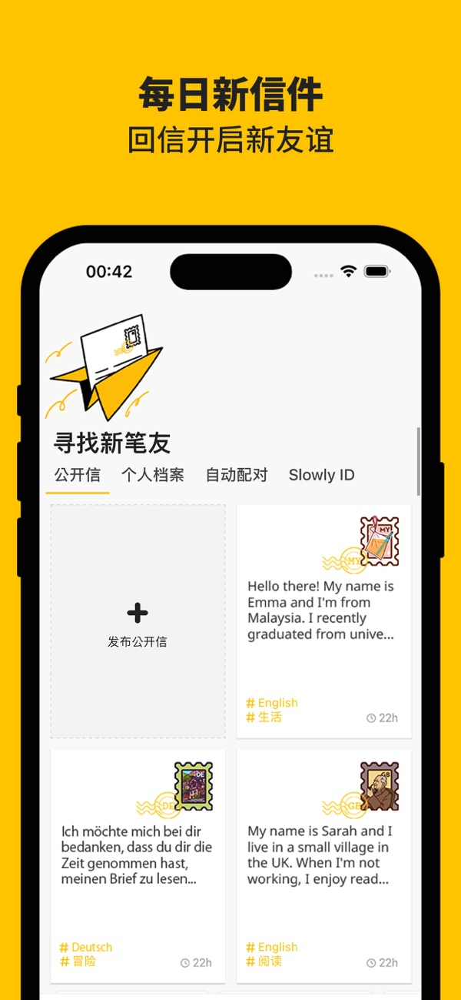

凌晨三点我在 Slowly 等一封从冰岛飘来的信
一封走了六天的电子信，让我重新理解了"等待"这件事。深夜蹲在收件箱刷新的那个人，在慢慢找回写信的感觉。
凌晨三点十七分，我把手机扔回枕头底下，盯着天花板发呆。屏幕暗下去之前，Slowly 的通知栏还是空的——那封从冰岛雷克雅未克寄出的信，已经在路上飘了整整六天了。
这事要从两周前说起。我在某天下班后被朋友塞了一个链接，说"你这种人应该试试这个"——朋友说这是 Slowly 的官网，让我自己去看看。起初我以为又是那种左滑右滑的新社交应用，点进去才发现完全不是，赶紧从Slowly下载拿了安装包装上——它根本没打算让你快速匹配快速开聊。注册时填的不是昵称和头像，而是你的城市、你想交流的语言、你愿意为一封信等多久。我选了"等三到七天"，勾选了"英语"和"中文"两种交流语言，然后系统把我扔进了一个叫做"发现"的页面。

界面简单得不像话，底部只有五个标签：收件箱、信件列表、发现、写信、我的档案。没有点赞按钮，没有消息红点轰炸，没有"对方正在输入"的提示——这个应用从一开始就没打算让你快。我在发现页翻了一圈公开信，一个自称来自加拿大温哥华的姑娘在找"愿意聊聊城市冬天长什么样的人"，另一个东京的高中生想找人练习中文书写。我犹豫了好一会儿，最终没发任何邀请，退出了应用。
第二天晚上，我收到了系统推送的自动配对——一个来自冰岛的用户，匹配度标了个"中"。对方的公开档案只写了一行："我喜欢看极光，想找人聊聊你们那边的四季。"我盯着那行字看了五分钟，最终点了"发送第一封信"。写信界面跳出来的瞬间我愣了一下——它看起来真的像在写一封真实的信。有信封的轮廓，有右上角的邮票位，正文区是大片的空白纸，没有任何字数统计或表情按钮。我写了大概三百字，介绍了我在国内南方一座山城的生活，说我们这儿的冬天不下雪但会连下一个月的雨，说我最近在学冰岛语的绕口令。写完点"寄出"的那一刻，信封图标晃了一下，右上角贴的那枚注册时送的邮票跟着信封一起飞了出去——就这一瞬间，我居然有点舍不得。
寄出后我才意识到一件事：我不知道这封信什么时候能到。Slowly 里的信件不是即时送达的，它会根据你和对方的地理距离来模拟真实的邮寄时间。我打开写信界面想确认一下规则，翻了好一会儿才在Slowly文档里找到说明——距离越远，送达时间越长，从几小时到几天不等。冰岛到我这里，系统估算的是五到七天。

接下来的日子，我养成了一个奇怪的习惯：每天睡前打开 Slowly 看一眼收件箱。不是刷，就是看一眼——有没有新的信封冒出来。第一天没有，第二天没有，第三天我甚至忘了这件事。直到第四天晚上，我在洗碗的时候手机震了一下，Slowly 推送了一条："你的一封信已送达！"我擦干手跑过去点开，不是冰岛那位，是另一个我没注意到的笔友——一个来自德国柏林的男生，在公开信里看到我关于山城的描述，主动给我写了一封信，聊起他去年夏天去贵州徒步的经历。那封信走了三天，内容比我的长一倍，里面还贴了一枚印着勃兰登堡门的邮票。
我回信的时候特意翻了翻自己的邮票册——原来柏林来信上的邮票已经自动归到我的集邮册里了，但只能收藏，不能再贴回去。要贴邮票得用"我的邮票"里自己解锁或买到的那些。这点设计挺妙的，一下子把"收到的邮票"和"能用的邮票"做了区分，真实世界的邮票盖戳后确实也不能再用。我在商店里逛了逛，发现邮票种类还挺多的，按地区、节日、成就分门别类，有些是限定图案，得用硬币买。硬币可以直接买，也可以通过看视频、领礼物盒之类的免费途径攒——首页偶尔会蹦出来一个小礼物盒图标，点一下就送几枚硬币，像开盲盒似的。
冰岛那封信最终在第六天晚上到了。我当时正在写代码，手机放在桌边没注意到震动。等我伸懒腰拿起手机的时候，信封图标在收件箱里跳了好久了。点开一看，对方写了将近四百字，说她上周刚从冰岛北部看极光回来，描述了极光在雪地上空像绿色绸缎一样飘的样子，说她从没见过那种光，只在教科书里看过。她说冰岛的冬天下午三点就天黑了，所以她大部分时间都在屋里写信和看书。信的末尾她写："谢谢你的山城故事，我从来没想过有人会在一个不下雪的地方过冬。"
我坐在那里看了很久。窗外是南方冬天常见的阴沉沉的天，远处的山被雾气盖着，楼下有人在喊收衣服。我想了想，打开写信界面，贴了一枚新解锁的中国春节主题邮票，开始写回信。
这件事让我重新想了想"写信"到底是什么感觉。以前用各种聊天工具，我习惯了秒回、习惯了一句话分三段发、习惯了用表情包掩盖尴尬。Slowly 把这些全都剥掉了——你只能写长的，你不能急着要回复，你写的每一个字都会在网络上漂好几天才到对方手里。这种延迟感一开始让我不太适应，甚至有点焦虑，但收到信的那一刻，那种满足感是任何即时消息都给不了的。不是因为对方说了什么了不起的话，而是因为有一封信，跨越了大半个地球，真的"寄"到了我手里。
我后来又在 Slowly 上交了几个笔友。有一个来自新西兰的退休老师，每周给我写一封长信聊她的花园；有一个来自巴西的大学生，想让我教他写中文书法。我每天还是会打开应用看一眼收件箱，但不再焦虑了——知道信在路上飘着，反而有种踏实的感觉。这种慢慢的、不着急的社交方式，在现在这个什么都要快的时代里，像一口温白开，没什么刺激性，但喝下去让人舒服。
Slowly 的界面可以切成中文，设置里语言选项不少，配对的时候也能选交流语言。它还有一套匹配筛选器，你可以按地区、年龄、交流语言来缩小范围。但说实话我很少用筛选器——自动配对的随机性反而让我觉得有意思，你永远不知道下一封信会从哪个国家飘过来。
我写这篇文章的时候，冰岛那位笔友的第二封信又在路上了。这次系统估算的送达时间是四天——因为已经建立了笔友关系，后续信件的传递速度好像会快一点。我已经在写信界面准备好了回信，贴了一枚从商店里解锁的熊猫主题邮票，正文写了一半，聊我最近在看的一部老电影。不急，反正还要等四天。顺手提一句，这款应用的安装包和相关资料我在GitHub上有备份，Gitee和GitCode上也各存了一份，国内朋友访问起来更顺畅。